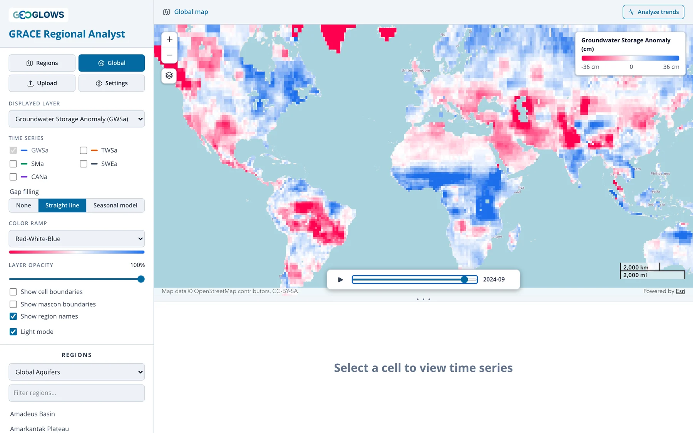
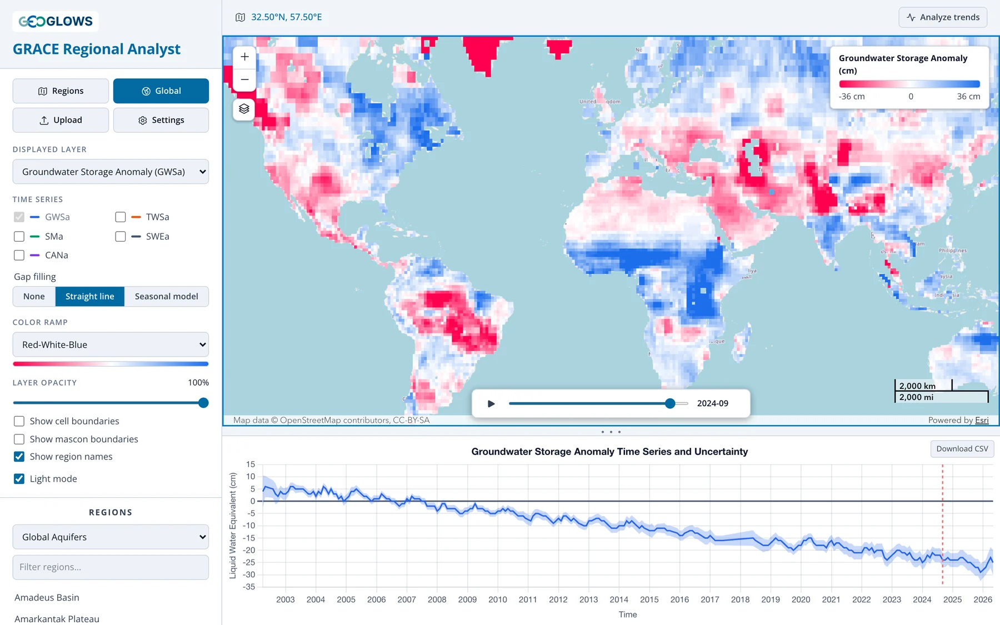
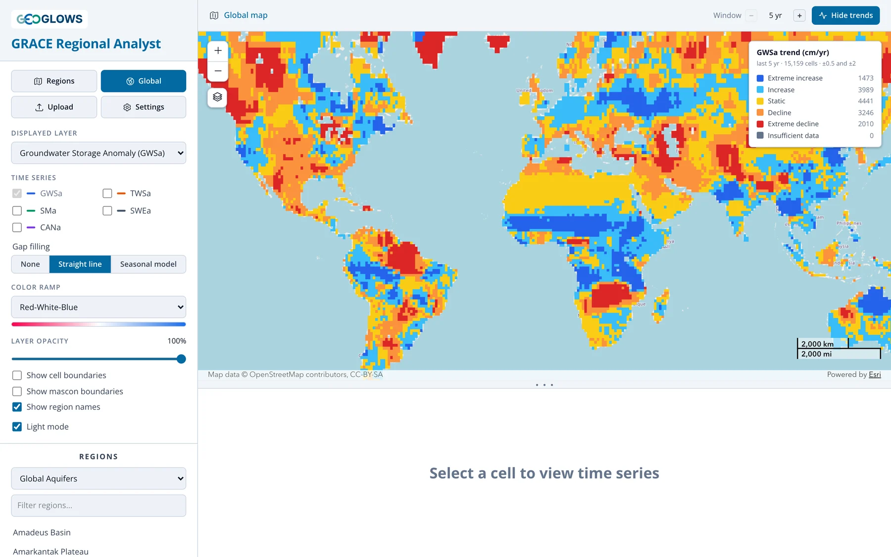

Vue Globale
La vue globale
Cliquez sur Global pour afficher la couche sélectionnée sur toutes les mailles continentales du monde. À la première ouverture, l’application télécharge la série complète de cette couche, ce qui peut prendre un peu de temps ; elle est ensuite mise en cache dans votre navigateur.

Appuyez sur lecture dans le contrôle temporel pour animer la série mois par mois. La vue globale défile plus vite que la vue régionale, environ quatre mois par seconde, et reprend au début en boucle. L’animation fait ressortir les grandes structures : la baisse continue dans le nord de l’Inde, au Moyen-Orient et dans la plaine de Chine du Nord, la hausse du stockage dans le Sahel depuis 2010 environ, et les années humides et sèches qui balaient l’Amazonie et l’Afrique australe.
Changez la couche affichée (Displayed layer) pour comparer les composantes. La TWSa montre le contour en blocs des mascons de 3° (voir La Mission GRACE) ; la SWEa est proche de zéro partout sauf aux hautes latitudes et en montagne ; la SMa montre l’humidification et l’assèchement saisonniers des sols.
Série temporelle d’une maille
Cliquez sur n’importe quelle maille continentale pour tracer sa série temporelle. Le fil d’Ariane affiche alors les coordonnées de la maille, et le graphique présente ses valeurs avec la bande d’incertitude ±1σ. Le graphique fonctionne comme pour une région (voir Vue Régionale), et le fichier CSV téléchargé pour une maille porte le nom de ses coordonnées.

Une maille isolée se consulte rapidement, mais n’oubliez pas que GRACE résout environ 3° : la TWSa de la maille est donc partagée avec ses voisines du même mascon. Pour un bassin ou un aquifère, utilisez la vue régionale, qui fait la moyenne de toutes les mailles de la région.
Carte des tendances
Lorsque les tendances sont activées, la vue globale colore chaque maille selon sa tendance au lieu de l’anomalie mensuelle, et l’animation est masquée. La légende compte les mailles de chaque classe.

Voir Analyse des Tendances pour le calcul de la tendance et le choix de la fenêtre.